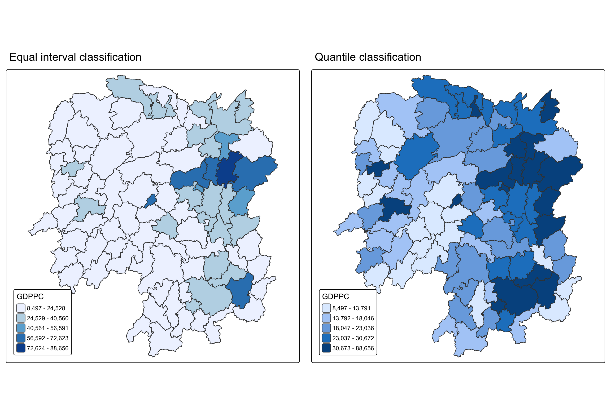
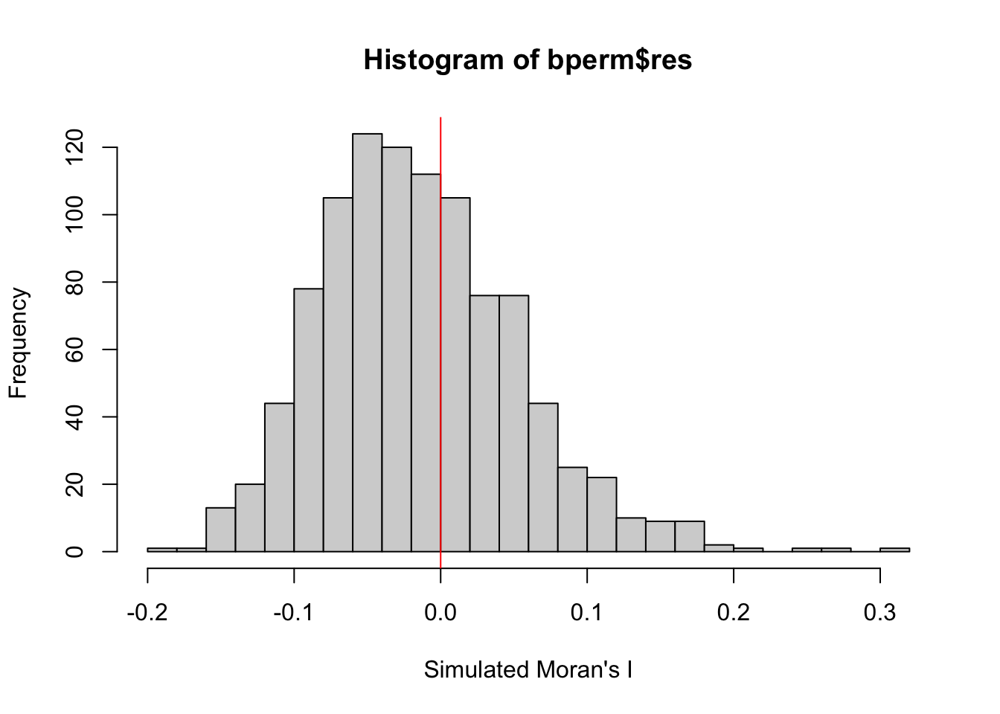
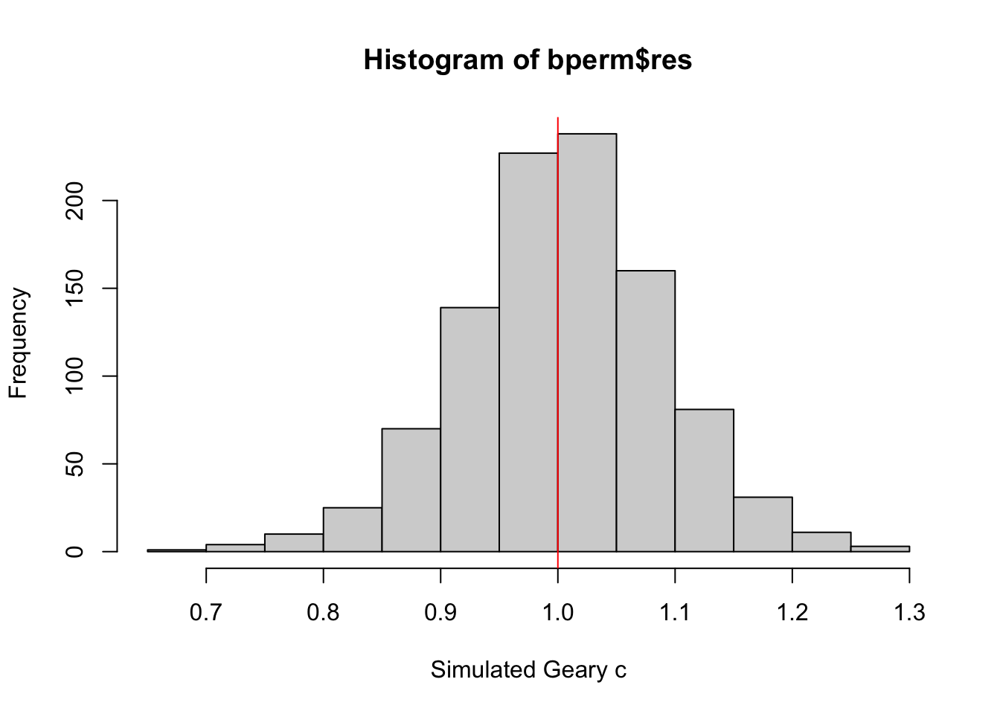
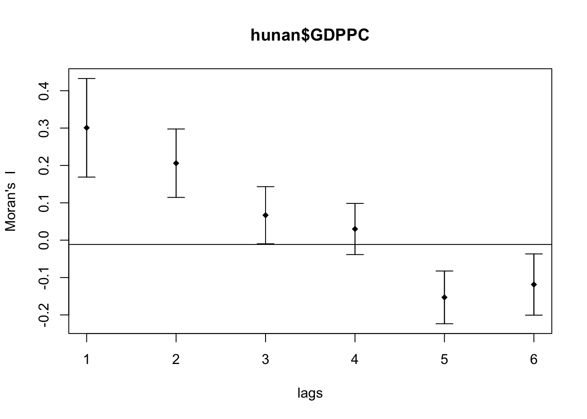
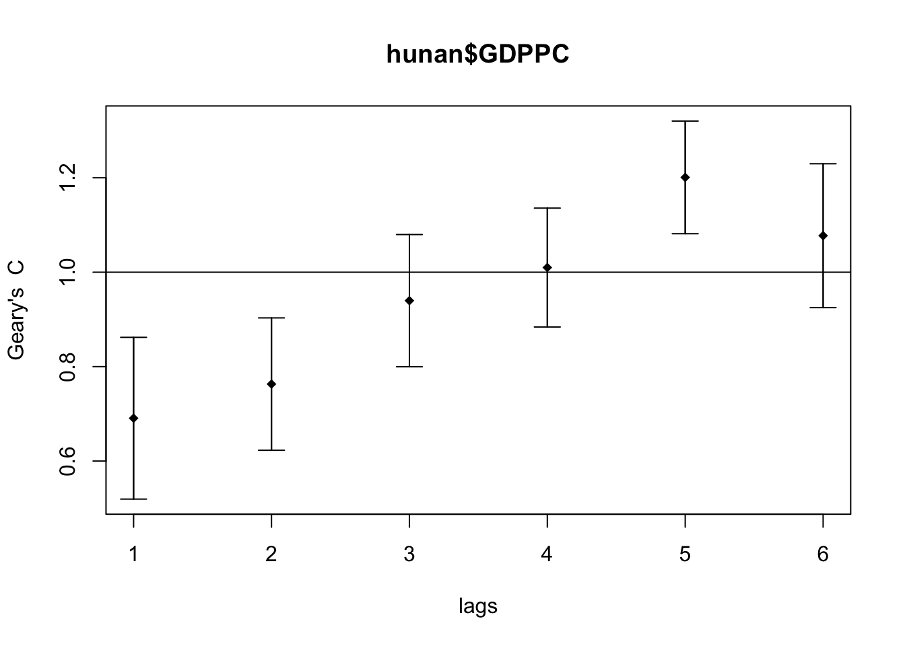
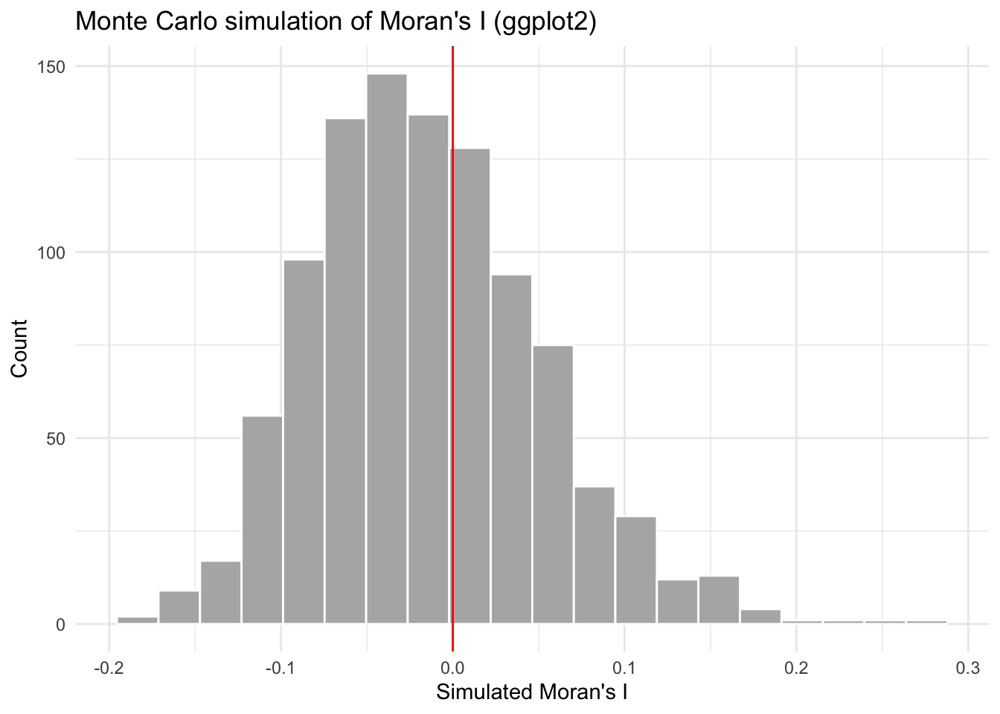
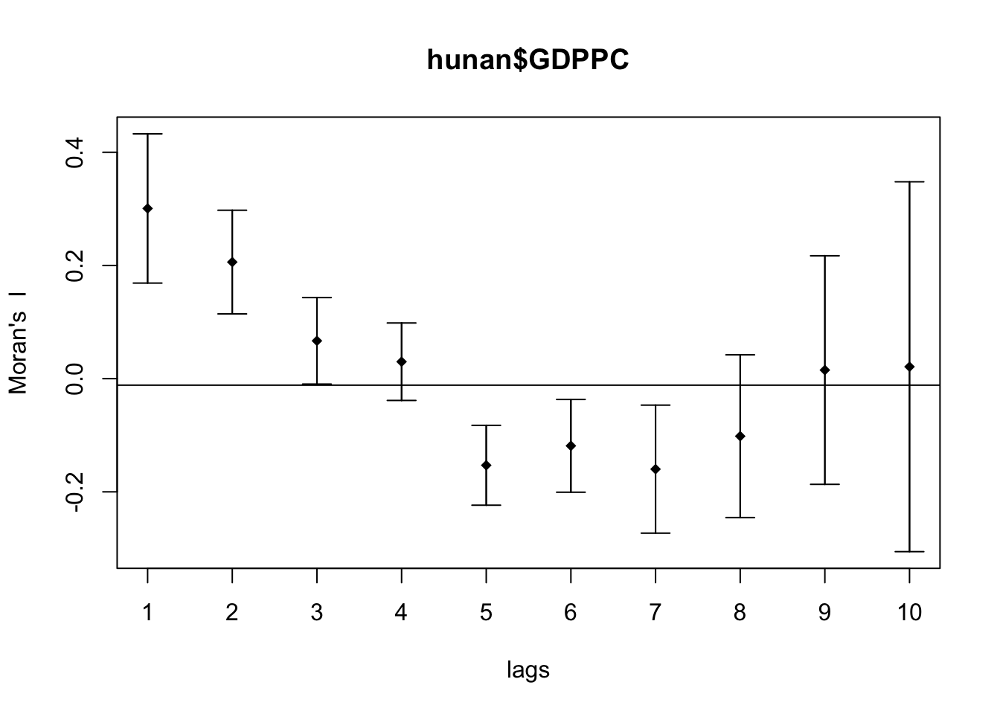

pacman::p_load(sf, spdep, tmap, tidyverse)Nor Hendra
Geospatial Analytics & Applications
Hands-on Exercise 5A: Global Measures of Spatial Autocorrelation
1. Learning Outcome
This exercise moves from spatial weights, which I built in the previous chapter, into actually using them. The question here is simple to state and harder to answer well: is GDP per capita spread evenly across Hunan’s counties, or does it cluster? I am using spdep to compute Moran’s I and Geary’s C, both as analytical tests and as Monte Carlo permutations, and then a spatial correlogram to see how the clustering behaves as distance between counties increases.
By the end of this I should be able to say, with a statistically defensible answer, whether Hunan’s GDPPC in 2012 shows spatial randomness or spatial structure, and if structure, roughly how far that structure reaches.
2. The Data
Two files, same as Hands-on Exercise 4:
- Hunan county-level administrative boundary, ESRI shapefile format.
Hunan_2012.csv, containing GDPPC and other development indicators for 2012.
3. Installing and Loading the R Packages
Four packages this time: sf for the geospatial import, spdep for the weights and autocorrelation statistics, tmap for the choropleth, tidyverse for everything else.
4. Getting the Data Into R
4.1 Importing the shapefile
hunan <- st_read(dsn = "data/geospatial",
layer = "Hunan")Reading layer `Hunan' from data source
`/Users/norhendra/norhendra/ISSS626-GAA/Hands-on_Ex/Hands-on_Ex05/data/geospatial'
using driver `ESRI Shapefile'
Simple feature collection with 88 features and 7 fields
Geometry type: POLYGON
Dimension: XY
Bounding box: xmin: 108.7831 ymin: 24.6342 xmax: 114.2544 ymax: 30.12812
Geodetic CRS: WGS 8488 features, 7 fields, WGS 84. Matches what the reference reports for the same file.
4.2 Importing the csv
hunan2012 <- read_csv("data/aspatial/Hunan_2012.csv")88 rows, one per county, with GDPPC sitting as the ninth column alongside wages, deposits, fixed asset investment and the rest.
4.3 Joining the two
hunan <- left_join(hunan, hunan2012) %>%
select(1:4, 7, 15)4.4 Visualising GDPPC
equal <- tm_shape(hunan) +
tm_polygons(fill = "GDPPC",
fill.scale = tm_scale_intervals(
style = "equal",
n = 5,
values = "brewer.blues")) +
tm_borders(fill_alpha = 0.5) +
tm_layout(legend.position = c("left", "bottom"),
main.title = "Equal interval classification")
quantile <- tm_shape(hunan) +
tm_polygons(fill = "GDPPC",
fill.scale = tm_scale_intervals(
style = "quantile",
n = 5)) +
tm_borders(fill_alpha = 0.5) +
tm_layout(legend.position = c("left", "bottom"),
main.title = "Quantile classification")
tmap_arrange(equal,
quantile,
asp = 1,
ncol = 2)
NoteMy Findings
The quantile map spreads colour more evenly across the province since each bucket holds the same number of counties. The equal-interval map is more honest about the actual GDPPC gap: most counties sit in the lowest band and a handful of outliers, Changsha and its immediate neighbours, pull the breaks wide, so those outliers end up carrying most of the visual weight.
5. Global Measures of Spatial Autocorrelation
5.1 Computing Contiguity Spatial Weights
wm_q <- poly2nb(hunan,
queen = TRUE)
summary(wm_q)Neighbour list object:
Number of regions: 88
Number of nonzero links: 448
Percentage nonzero weights: 5.785124
Average number of links: 5.090909
Link number distribution:
1 2 3 4 5 6 7 8 9 11
2 2 12 16 24 14 11 4 2 1
2 least connected regions:
30 65 with 1 link
1 most connected region:
85 with 11 links88 regions, 448 nonzero links, average of just over 5 neighbours per county. Two counties (index 30 and 65, Jinshi and Shaoshan by position) have only one neighbour each, and one county has 11. Matches the reference exactly.
5.2 Row-Standardised Weights Matrix
rswm_q <- nb2listw(wm_q,
style = "W",
zero.policy = TRUE)
rswm_qCharacteristics of weights list object:
Neighbour list object:
Number of regions: 88
Number of nonzero links: 448
Percentage nonzero weights: 5.785124
Average number of links: 5.090909
Weights style: W
Weights constants summary:
n nn S0 S1 S2
W 88 7744 88 37.86334 365.9147
NoteWhat this actually does
nb2listw() needs an nb object as input. style = "W" row-standardises, meaning each neighbour gets weight 1/(number of neighbours), so every county’s row of weights sums to 1. The alternative, style = "B", just uses binary 0/1 weights without that normalisation. zero.policy = TRUE matters here because it lets counties with no neighbours (none in this data, but worth knowing) get a zero-length weight vector instead of throwing an error.
5.3 Moran’s I
5.3.1 The test
moran.test(hunan$GDPPC,
listw = rswm_q,
zero.policy = TRUE,
na.action = na.omit)
Moran I test under randomisation
data: hunan$GDPPC
weights: rswm_q
Moran I statistic standard deviate = 4.7351, p-value = 1.095e-06
alternative hypothesis: greater
sample estimates:
Moran I statistic Expectation Variance
0.300749970 -0.011494253 0.004348351 Moran’s I comes out at 0.301, well above the expected value of -0.011 under spatial randomness, with a standardised deviate of 4.74 and a p-value under 0.0001. That’s a clear rejection of the null. GDPPC in Hunan is not scattered at random across counties, it clusters.
5.3.2 Monte Carlo Moran’s I
An analytical test assumes normality or randomisation conditions that may not hold perfectly for 88 irregular polygons, so it’s worth checking the same question with a permutation approach that doesn’t lean on that assumption.
set.seed(1234)
bperm <- moran.mc(hunan$GDPPC,
listw = rswm_q,
nsim = 999,
zero.policy = TRUE,
na.action = na.omit)
bperm
Monte-Carlo simulation of Moran I
data: hunan$GDPPC
weights: rswm_q
number of simulations + 1: 1000
statistic = 0.30075, observed rank = 1000, p-value = 0.001
alternative hypothesis: greater
NoteWhat can I conclude?
Same conclusion from a different angle. The observed statistic of 0.301 ranks 1000th out of 1000 (999 simulations plus the observed value), giving a permutation p-value of 0.001, the smallest this test can report at this simulation count. The two methods agree.
5.3.3 Visualising the Monte Carlo distribution
mean(bperm$res[1:999])[1] -0.01504572var(bperm$res[1:999])[1] 0.004371574summary(bperm$res[1:999]) Min. 1st Qu. Median Mean 3rd Qu. Max.
-0.18339 -0.06168 -0.02125 -0.01505 0.02611 0.27593 hist(bperm$res,
freq = TRUE,
breaks = 20,
xlab = "Simulated Moran's I")
abline(v = 0,
col = "red")
NoteObservation
The simulated values centre near zero (mean -0.015), as they should under the null of no spatial pattern, and the observed 0.301 sits well out past the right tail, clear of the whole simulated distribution.
Tip
The reference leaves plotting this in ggplot2 as a reader challenge instead of doing it. I’ve picked that up properly in the Extras section rather than half-answering it here.
5.4 Geary’s C
5.4.1 The test
geary.test(hunan$GDPPC, listw = rswm_q)
Geary C test under randomisation
data: hunan$GDPPC
weights: rswm_q
Geary C statistic standard deviate = 3.6108, p-value = 0.0001526
alternative hypothesis: Expectation greater than statistic
sample estimates:
Geary C statistic Expectation Variance
0.6907223 1.0000000 0.0073364
NoteConclusion
Geary’s C runs on a different scale to Moran’s I: 1 means no autocorrelation, values below 1 indicate positive autocorrelation (similar values cluster together), above 1 indicates negative autocorrelation. Here C = 0.691, meaningfully below 1, with a standardised deviate of 3.61 and p = 0.00015. Same conclusion as Moran’s I: clustering, not randomness.
5.4.2 Monte Carlo Geary’s C
set.seed(1234)
bperm = geary.mc(hunan$GDPPC,
listw = rswm_q,
nsim = 999)
bperm
Monte-Carlo simulation of Geary C
data: hunan$GDPPC
weights: rswm_q
number of simulations + 1: 1000
statistic = 0.69072, observed rank = 1, p-value = 0.001
alternative hypothesis: greater
NoteConclusion
Observed rank 1 out of 1000 this time, since Geary’s C reads in the opposite direction to Moran’s I (low values are the interesting tail here, not high ones). Same p-value of 0.001, same conclusion.
5.4.3 Visualising the Monte Carlo distribution
mean(bperm$res[1:999])[1] 1.004402var(bperm$res[1:999])[1] 0.007436493summary(bperm$res[1:999]) Min. 1st Qu. Median Mean 3rd Qu. Max.
0.7142 0.9502 1.0052 1.0044 1.0595 1.2722 hist(bperm$res, freq = TRUE, breaks = 20, xlab = "Simulated Geary c")
abline(v = 1, col = "red")
NoteConclusion
Simulated values centre close to 1 (mean 1.004), and the observed 0.691 sits well below that whole distribution. Consistent with the analytical test above.
5.5 Spatial Correlogram
A single Moran’s I or Geary’s C number tells me whether there’s clustering overall, but not how far it reaches. A correlogram answers that by recomputing the statistic at increasing neighbour lags, so lag 1 is immediate neighbours, lag 2 is neighbours-of-neighbours not already counted at lag 1, and so on.
5.5.1 Moran’s I correlogram
MI_corr <- sp.correlogram(wm_q,
hunan$GDPPC,
order = 6,
method = "I",
style = "W")
plot(MI_corr)
print(MI_corr)Spatial correlogram for hunan$GDPPC
method: Moran's I
estimate expectation variance standard deviate Pr(I) two sided
1 (88) 0.3007500 -0.0114943 0.0043484 4.7351 2.189e-06 ***
2 (88) 0.2060084 -0.0114943 0.0020962 4.7505 2.029e-06 ***
3 (88) 0.0668273 -0.0114943 0.0014602 2.0496 0.040400 *
4 (88) 0.0299470 -0.0114943 0.0011717 1.2107 0.226015
5 (88) -0.1530471 -0.0114943 0.0012440 -4.0134 5.984e-05 ***
6 (88) -0.1187070 -0.0114943 0.0016791 -2.6164 0.008886 **
---
Signif. codes: 0 '***' 0.001 '**' 0.01 '*' 0.05 '.' 0.1 ' ' 1
NoteConclusion
Positive and significant at lags 1 and 2, fading through lag 3 and 4, then flipping to significantly negative at lags 5 and 6. That flip is the signature of a province with a rich core (Changsha and its neighbours) surrounded by a poorer periphery: counties close to the core resemble each other, counties far from it resemble each other, and the two groups pull apart from each other at that distance.
5.5.2 Geary’s C correlogram
GC_corr <- sp.correlogram(wm_q,
hunan$GDPPC,
order = 6,
method = "C",
style = "W")
plot(GC_corr)
print(GC_corr)Spatial correlogram for hunan$GDPPC
method: Geary's C
estimate expectation variance standard deviate Pr(I) two sided
1 (88) 0.6907223 1.0000000 0.0073364 -3.6108 0.0003052 ***
2 (88) 0.7630197 1.0000000 0.0049126 -3.3811 0.0007220 ***
3 (88) 0.9397299 1.0000000 0.0049005 -0.8610 0.3892612
4 (88) 1.0098462 1.0000000 0.0039631 0.1564 0.8757128
5 (88) 1.2008204 1.0000000 0.0035568 3.3673 0.0007592 ***
6 (88) 1.0773386 1.0000000 0.0058042 1.0151 0.3100407
---
Signif. codes: 0 '***' 0.001 '**' 0.01 '*' 0.05 '.' 0.1 ' ' 1
NoteConclusion
Reads the same story from the other statistic: significant clustering (C below 1) at lags 1 and 2, and a significant swing toward dissimilarity (C above 1) at lag 5. Lags 3, 4 and 6 don’t clear significance either way. Moran’s I and Geary’s C don’t always land on exactly the same lags as significant, which makes sense given they weight deviations differently, but the overall shape they trace is the same.
6. Extras
6.1 Answering the reference’s own ggplot2 challenge
Section 9.5.3 of the reference poses this as a challenge rather than doing it: plot the simulated Moran’s I values with ggplot2 instead of base graphics.
set.seed(1234)
bperm_gg <- moran.mc(hunan$GDPPC, listw = rswm_q, nsim = 999,
zero.policy = TRUE, na.action = na.omit)
ggplot(data.frame(sim = bperm_gg$res[1:999]), aes(x = sim)) +
geom_histogram(bins = 20, fill = "grey70", color = "white") +
geom_vline(xintercept = 0, color = "red") +
labs(x = "Simulated Moran's I", y = "Count",
title = "Monte Carlo simulation of Moran's I (ggplot2)") +
theme_minimal()
Same distribution, same conclusion, just cleaner axis handling and no need to call abline() as a separate step.
6.2 Row-standardised versus binary weights: does the coding scheme change the verdict?
The reference mentions in passing that style = "B" (binary weights) is available as a more robust alternative to style = "W". I’m checking whether the choice changes anything that matters.
wm_B <- nb2listw(wm_q, style = "B", zero.policy = TRUE)
moran.test(hunan$GDPPC, listw = wm_B, zero.policy = TRUE, na.action = na.omit)
Moran I test under randomisation
data: hunan$GDPPC
weights: wm_B
Moran I statistic standard deviate = 5.1184, p-value = 1.54e-07
alternative hypothesis: greater
sample estimates:
Moran I statistic Expectation Variance
0.308569009 -0.011494253 0.003910176 I comes out at 0.309 under binary weighting versus 0.301 under row standardisation, and the standardised deviate actually goes up slightly, 5.12 versus 4.74. Direction and significance both hold either way. For this data set, the coding scheme shifts the exact number a little but doesn’t change the conclusion. That’s reassuring, since it means the earlier result isn’t an artefact of picking “W” for convenience.
6.3 Queen versus rook contiguity: how much does the neighbour rule matter?
poly2nb() defaults to queen contiguity (shared edge or corner counts as neighbouring). Rook contiguity (queen = FALSE) requires a shared edge, corners alone don’t count. Given how irregular Hunan’s county boundaries are, I wanted to see how much that distinction actually changes.
wm_r <- poly2nb(hunan, queen = FALSE)
summary(wm_r)Neighbour list object:
Number of regions: 88
Number of nonzero links: 440
Percentage nonzero weights: 5.681818
Average number of links: 5
Link number distribution:
1 2 3 4 5 6 7 8 9 10
2 2 12 20 21 14 11 3 2 1
2 least connected regions:
30 65 with 1 link
1 most connected region:
85 with 10 linksrswm_r <- nb2listw(wm_r, style = "W", zero.policy = TRUE)
moran.test(hunan$GDPPC, listw = rswm_r, zero.policy = TRUE, na.action = na.omit)
Moran I test under randomisation
data: hunan$GDPPC
weights: rswm_r
Moran I statistic standard deviate = 4.8103, p-value = 7.535e-07
alternative hypothesis: greater
sample estimates:
Moran I statistic Expectation Variance
0.308366499 -0.011494253 0.004421564 Rook contiguity drops the link count from 448 to 440, eight fewer neighbour pairs that only touched at a corner. Moran’s I moves from 0.301 to 0.308, again in the same direction with comparable significance. The two contiguity rules are near-substitutes here, which isn’t guaranteed in general, some geographies have enough corner-touching polygons that the rule genuinely matters, but for Hunan’s counties it doesn’t swing the result.
6.4 Pushing the correlogram past six lags
The reference stops the correlogram at order 6 without saying why that particular cutoff. I wanted to see what happens further out, and whether the sample size behind each lag holds up.
MI_corr10 <- sp.correlogram(wm_q, hunan$GDPPC, order = 10, method = "I",
style = "W", zero.policy = TRUE)
plot(MI_corr10)
print(MI_corr10)Spatial correlogram for hunan$GDPPC
method: Moran's I
estimate expectation variance standard deviate Pr(I) two sided
1 (88) 0.3007500 -0.0114943 0.0043484 4.7351 2.189e-06 ***
2 (88) 0.2060084 -0.0114943 0.0020962 4.7505 2.029e-06 ***
3 (88) 0.0668273 -0.0114943 0.0014602 2.0496 0.040400 *
4 (88) 0.0299470 -0.0114943 0.0011717 1.2107 0.226015
5 (88) -0.1530471 -0.0114943 0.0012440 -4.0134 5.984e-05 ***
6 (88) -0.1187070 -0.0114943 0.0016791 -2.6164 0.008886 **
7 (83) -0.1598792 -0.0121951 0.0031980 -2.6115 0.009014 **
8 (67) -0.1016594 -0.0151515 0.0051687 -1.2033 0.228869
9 (45) 0.0151929 -0.0227273 0.0101956 0.3755 0.707254
10 (19) 0.0210858 -0.0555556 0.0266889 0.4691 0.638973
---
Signif. codes: 0 '***' 0.001 '**' 0.01 '*' 0.05 '.' 0.1 ' ' 1The number of counties actually contributing to each lag (shown in parentheses next to the lag number) drops off fast: 88 at lag 6, down to 67 at lag 8 and just 19 by lag 10. That’s not a flaw in the method, it’s simply how many county pairs are still that many steps apart in a network with only 88 nodes and an average of 5 neighbours each. The error bars widen accordingly and neither lag 9 nor lag 10 reaches significance. Six lags turns out to be a reasonable place to stop, not an arbitrary one: past that point the correlogram is estimating from a shrinking, noisier subset of the province rather than telling me anything new about the spatial structure.